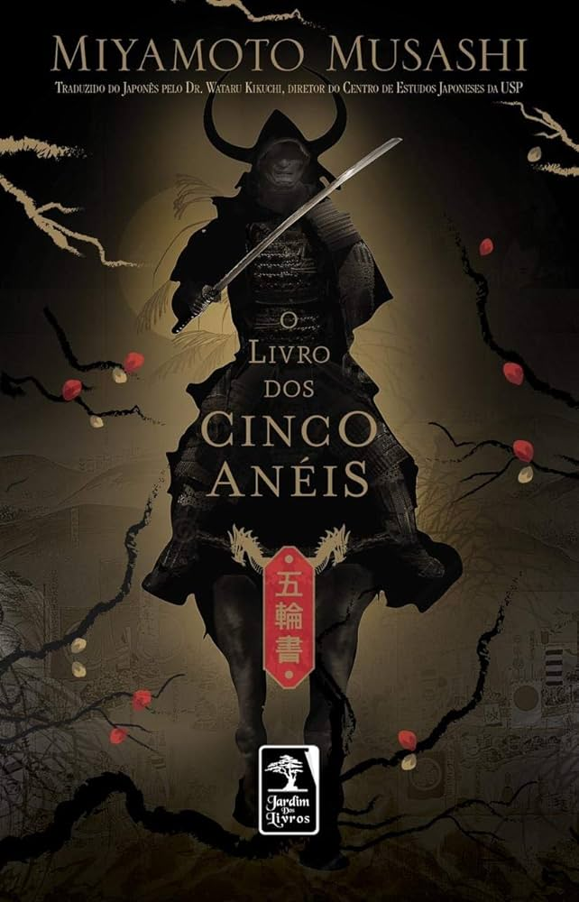

Destaque do mês

Livro Cinco aneis
O "Livro dos Cinco Anéis" de Miyamoto Musashi, escrito por volta de 1645, é um clássico sobre estratégia marcial e filosofia. Dividido em cinco seções (Terra, Água, Fogo, Vento e Vazio), o livro explora os princípios da sua escola de esgrima e oferece insights sobre adaptabilidade, tática, compreensão de diferentes perspectivas e a importância de um estado mental livre. Embora originalmente voltado para samurais, seus ensinamentos sobre estratégia e autoconhecimento continuam relevantes em diversas áreas da vida.
Review dos leitores
Isabela Costa
Sofia Dubois
Ramiro Guzmán
"Achei fascinante a perspectiva de Musashi sobre a importância da disciplina mental e da observação."
"O capítulo sobre o 'Vazio' foi o mais impactante."
"A simplicidade com que ele aborda conceitos complexos é impressionante."